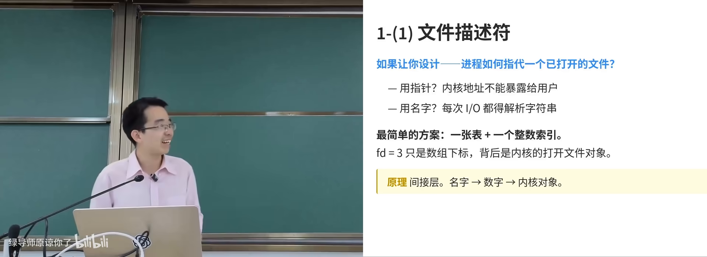
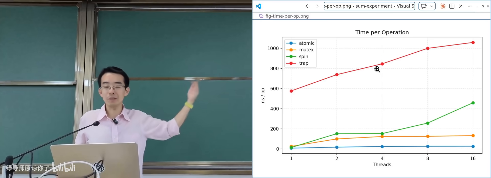
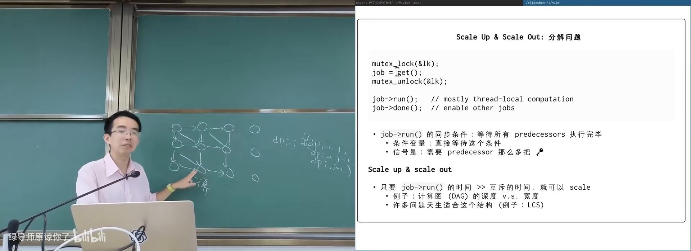
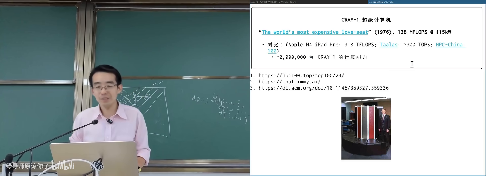
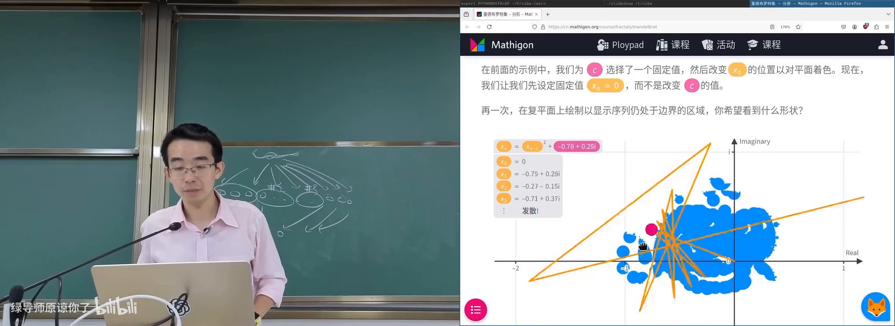
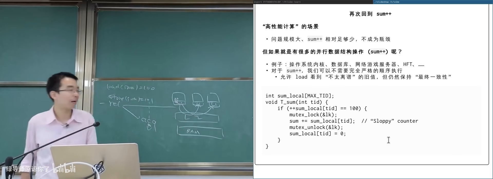
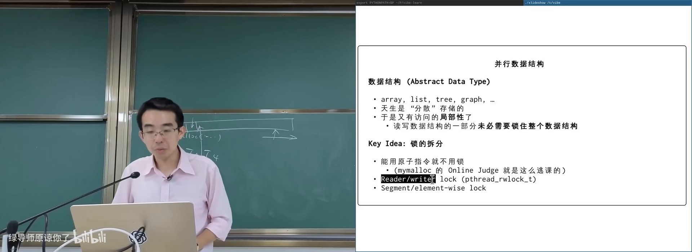

原视频：Bilibili · BV1WqdTBiEkN（时长约 87 分钟） 课程：南京大学《操作系统原理》（2026）第 18 讲 整理说明：本书由视频字幕经 AI 重构而成；口语已转为书面语；关键时间点标注 (参考时间)，截图卡片可跳转视频对应位置。
1. 期中测验回顾与并发学习的姿态
(参考时间: 00:00)
本讲主题是并行算法和数据结构（在多核/多机上让性能随资源增长的算法与并发数据结构设计）。开课先回顾期中测验，不是为了排名，而是为了澄清：在 Agentic AI 时代，概念为什么仍然重要。
期中题目偏向「如果你是操作系统设计者会怎么做」，而不是死记 API：
- 文件描述符（file descriptor，进程用来指代已打开对象的小整数）：地址空间隔离导致不能直接用指针，UNIX 选择「进程私有表 + 整数下标」，背后是内核对象（everything is a file）。
- fork 之后文件描述符如何处理：子进程应共享打开文件与偏移量，否则父子同时写日志会互相覆盖；shell 里
cmd1; cmd2合并输出，也依赖共享 offset。 - execve：换掉代码与数据段，但文件描述符表和 PID 等身份信息应尽量保留，管道与重定向才得以实现。
- 终端 UI 的构成：画界面不只靠 Unicode，更靠 escape code（控制光标、擦除区域的控制序列）；再叠加 PTY 与信号（如 Ctrl+C）。
- 调试与定位：二进制是否动态加载看 ELF 的 interpreter；谁改了变量可用 watchpoint；
mmap系统调用可用 trace/单步定位。 - struct file 的定义：实际类型是
__IO_FILE等 typedef；也可用预处理器gcc -E看到编译器看到的世界。 - 多线程 fork：只有调用 fork 的线程在子进程存活，锁状态可能永远等不到释放；工程上通常 fork 后立刻 execve。

期中测验：站在设计者角度理解系统调用在 B 站打开 (00:01:20)
AI 对这些问题的回答出人意料地完整，甚至反问「你不需要记住所有答案，只要想：如果我来设计会怎么做」。主讲人由此提出一个真实的困惑：
每一个训练 batch 对模型都是一场「考试」，模型会越考越强；而人类若完全不建立概念，对 AI 的失控感会越来越强。
课程仍坚持把概念讲清楚：你至少要知道该让 AI 往哪个方向努力；在架构、系统设计、工具品位上，AI 目前仍难独立给出「更好但不那么显眼」的选择。
2. 从 sum++ 看锁的代价与可扩展性
(参考时间: 00:14:00)
2.1 一个过度简化却足够典型的模式
并发程序里常见如下模式：
void *tsum(void *arg) {
pthread_mutex_lock(&lock);
sum++;
pthread_mutex_unlock(&lock);
return NULL;
}
现实中，sum++ 往往代表对共享数据结构的一次操作：往 print 缓冲写一块、更新字典项、点赞计数加一等。锁保护的是数据结构不变量，不是那一行加法本身。
2.2 实验：不同实现随线程数的曲线
课上对比过多种实现（在树莓派上随线程数增长）：
| 实现 | 行为特征 |
|---|---|
原子指令 sum++ |
无锁，最快 |
| pthread mutex | 进入内核/原子指令保护，线程增多后趋于饱和 |
| 自旋锁（spin lock） | 用户态忙等拿钥匙，竞争激烈时更差 |
| Futex 强行进内核 | 每次操作代价高，随线程数明显变差 |
真正好的实现应满足：CPU 从 1 核到 2 核、4 核，吞吐近似翻倍。互斥锁最多做到「不继续崩溃」，却不能 scale——串行化阻止了并行。

多种锁实现随线程数的性能对比在 B 站打开 (00:17:00)
互斥锁给出的保证是完整的 serializability（所有临界区像排好队一样依次发生）以及 unlock→lock 的 happens-before 与可见性；代价是 scalability（性能无法随 CPU/机器数量增长）。
2.3 计算图视角
任何一个并行计算问题本质都是计算图：
- 节点：一次计算
- 边：依赖关系
若节点内计算量大、且几乎不需要共享变量上锁，则「串行化区域」被压得很小，系统才能 scale up（单机多核）与 scale out（多机扩展）。
反例：若每个 dp[i][j] 都做一个节点，同步代价远大于算术本身，计算图设计就很糟糕。更好的切法是：
- 开始并行度不足时，整块串行算；
- 并行度上来后按对角线切成 2 块、3 块……
- 块间只保留层间依赖。

动态规划计算图：粗粒度分块降低同步在 B 站打开 (00:22:00)
3. 高性能计算：从科学模拟到 embarrassingly parallel
(参考时间: 00:24:00)
3.1 HPC 的定义与客户
高性能计算（High Performance Computing，用超算或集群解决需要海量算力的问题）的经典定义：harness the power of supercomputers or computer clusters to solve problems that require massive computation。
主要客户一直是数值密集型科学计算：
- 有模型就能模拟：粒子系统、气流、爆炸、有机物反应（量子化学）；
- 精度与算力近似可交换：投入越多计算，结果越接近真实；
- 应用覆盖天气预报、航天、制造、能源等；
- 后来加入矿场（PoW 需要证明算力）与 AI 推理/训练。

从 1976 Cray-1 到今天超算的算力跨越在 B 站打开 (00:28:00)
算力量级示意：
- 1976 年 Cray-1：约 138 MFLOPS，功耗 115 kW（被称为 “the world’s most expensive love seat”）；
- Apple M4 iPad Pro：约 3.8 TFLOPS；
- 专用推理 ASIC：可达数百 TFLOPS 量级，芯片功耗仅数十瓦；
- 今日超算榜单以 PFLOPS 计。
强烈推荐阅读 Cray-1 原论文中的整机设计图（指令集 + 物理布局）。
3.2 什么样的程序能跑在超算上？
驱动 HPC 的科学计算问题常可切网格：物理系统足够大时，切成百万/千万份；每份内部独立计算，仅在边界上需要同步。
评估超算常用 LINPACK（求解大规模线性方程组 Ax=b 的基准）。几乎所有用微分方程描述的非线性系统，都可通过牛顿法等化为线性方程组求解；稀疏问题也会局部稠密化再求解。
3.3 embarrassingly parallel
embarrassingly parallel（令人尴尬地容易并行：计算图几乎不需要同步与通信）指：一个节点可以散出成千上万个独立任务，最后汇总即可。
flowchart LR
A[问题切分] --> T1[任务1]
A --> T2[任务2]
A --> T3[任务N...]
T1 --> R[汇总结果]
T2 --> R
T3 --> R
课上例子：
- 树搜索：围棋等状态空间可指数展开；fork-based DFS 把搜索子树分到多线程/多机。十几倍加速很有意义——1 分钟任务变 6 秒，不打断工作流。
- 蒙特卡洛：独立采样再求均值，天然可分片。
- 视频编解码：关键帧切好后，段间可独立处理。
- Mandelbrot 集：每个像素（或像素块）的逃逸时间计算完全独立。
3.4 Mandelbrot / Julia 集：课堂上的并行演示
从递归 x_n = x_{n-1}^2 出发：
- 实数轴上可讨论收敛/发散；
- 复平面上乘法含旋转，轨迹更丰富；
- 再加常数
c（x_n = x_{n-1}^2 + c），改变c得到不同 Julia set； - 固定
x_0=0、遍历复平面上的c，得到 Mandelbrot set。
分形边界无穷精细；渲染时可把图像切成块，每块由一个线程/机器独立算完再拼回。

Mandelbrot 集渲染：像素级独立计算在 B 站打开 (00:44:00)
3.5 OpenMP：把同步复杂度藏进编译器
对科学计算开发者，不希望把 data race 的自由度全交给程序员。领域常用 MPI / OpenMP（在串行代码上用编译指导并行化的编程模型）。
OpenMP 典型写法：在顺序循环前加一行并行指导，例如：
#pragma omp parallel for num_threads(nthreads)
for (int i = 0; i < NSIZE; i++) {
if (mine(i)) {
picture[i] = mandelbrot(i);
}
}
课上对比：单线程约 18 秒扫完整幅图；16 线程约 3 秒。物理系同学不必先上操作系统课，只要会一句「魔法」，就能用好多核。
HPC 真正难的部分还包括：机房高速网络、机柜内外带宽不对称、功耗/散热/稳定性、存储容错与工具链——共享内存访问代价并不均等，跨机通信更慢且可能不可靠。
3.6 课程实验 gpt.c 的提示
实验基于裁剪后的 llama.c / GPT-2 推理代码：
- 源码在检测到 OpenMP 时自动启用并行，否则是纯单线程；
- 学生要用课程线程库自己找出推理中最可并行的循环，提取计算图并做同步；
- 建议用 profiler（如 perf）定位热点，而不是直接让 AI「并行化整个文件」。
AI 默认更可能给出 pthread 实现；若 prompt 里写明「可以用 OpenMP」，更可能保持代码结构干净。
4. 并行数据结构：放松可见性以换取扩展性
(参考时间: 00:59:11)
4.1 为何算法可并行之后，数据结构仍会卡住
HPC 场景里，串行化的 sum++ 相对海量计算只是零头。但现实里有许多操作本身就是共享数据结构读写的场景：
- 操作系统内核：进程/文件对象几乎每次访问都要保护，否则就是 data race；
- 数据库：热点帖子点赞计数；
- 网游服务器：大量玩家挤在同一坐标；
- 量化交易：极短时间内的共享状态更新。
若程序主体就是「线程 → 上锁 → sum++ → 解锁」，再强的锁也不能 scale。
4.2 sloppy counter：牺牲及时可见性
互斥锁的 release/acquire 保证：unlock 之后，其他线程 acquire 一定能看到最新值。代价来自硬件：每个 CPU 有私有 cache，store 要通过总线/一致性协议传播到其他核心。
Sloppy counter（宽松计数器：允许读到的计数暂时落后）的做法：
- 每个线程维护
sum_local； - 多数时候只做本地
sum_local++； - 本地累加到阈值（如 100）或超时（如 1ms）时，再上锁把本地值并入全局
sum。
读者几乎永远看到「稍旧」的值，但在超时上界内；换来的是绝大部分计算留在本地、很少争用全局锁。社交产品的点赞数往往就是这类实现。

Sloppy counter：线程本地累积再批量合并在 B 站打开 (01:04:00)
4.3 thread_local 语言支持
没有人喜欢手写 sum_local[tid]。从 C++11 起有 thread_local（每个线程一份的存储期修饰符），C23 也正式引入。
thread_local int x = 100; // 每线程一份
要点：
- 类型任意（int、struct、指针），可赋初值；
- 函数栈帧作用域里定义 thread_local 会与「每调用一份」冲突，编译器会拒绝；
- 普通全局
int x在多线程下x++可能看到 100,101,102…；thread_local 则每线程各自到 101，且取地址各不相同。
实现直觉（x86）：
- 全局变量：相对 PC/RIP 寻址；
- 栈上变量：相对 RSP；
- thread_local：相对线程控制块，常用 FS 段 + 偏移。
初值问题：全局 .data 靠 loader 搬一次即可；thread_local 的初值在线程创建时由 TLS 初始化（如 copy_tls / .tdata）复制到该线程的 TLS 区域。细节比课上第一眼线程模型更复杂，但对理解「每线程一份」足够。
4.4 抽象数据类型与锁拆分
抽象数据类型（ADT，只暴露 push/pop 等接口、隐藏实现的数据结构）：数组、链表、树、集合、映射等。结构变大后天然有局部性——线程 A 改节点 5、线程 B 读节点 7，往往并不冲突。
于是优化方向是把大锁拆开：
| 模式 | 要点 |
|---|---|
| 原子指令 | 能用原子加就不要整段锁（如在线评测的无锁日志槽：原子递增拿 slot，再写内容） |
| 读写锁 | 多个读者共享，写者独占；读多写少时收益大 |
| 锁拆分 / 细粒度锁 | 按数据结构部位上锁，如 hash 每个桶一把锁 |

Hash table 按桶上锁的细粒度并发在 B 站打开 (01:22:00)
4.5 并发 Hash Table 的陷阱
Hash table（关键字经哈希函数映射到桶，期望 O(1) 查找）在冲突处理上分叉：
- 链地址法：桶内挂链表/树。并发时访问某 key 往往只需保护对应桶。
- 开放寻址（open addressing，冲突时按探测序列找下一个空槽）：并发更难。
- 删除不能直接抹掉：探测链会断，后面元素找不到；需要 tombstone（墓碑，标记已删但探测仍可穿过）。
- resize：要分配更大表并迁移元素。若 resize 期间上所有大锁，数据结构会整段不可用（可能秒级）。实际系统会用细粒度锁渐进迁移——这里极易出错，也是 malloc 类实验高发区。
对库函数保持敬畏：malloc/free 的并发语义、与锁的交互，比课堂第一层抽象复杂得多。
附录：概念补给
scale up 与 scale out
- 是什么：scale up 是单机加核/加资源后性能仍增长；scale out 是加机器后总吞吐仍增长。
- 课上为何出现：并发算法与数据结构的核心目标，就是让系统能继续扩展。
- 和什么像：一家店增加收银台 vs 再开一家分店。
serializability
- 是什么：并发执行的结果看起来像某种串行顺序。
- 课上为何出现：互斥锁的强正确性保证。
- 常见误解：正确性强 ≠ 性能可扩展；锁往往正确但不 scale。
happens-before 与缓存可见性
- 是什么：通过同步原语保证一个线程的写对另一个线程在 acquire 后可见。
- 课上为何出现：解释为何「不用锁也可能看到旧值」以及 sloppy counter 的代价来源。
- 和什么像：公告必须贴到各办公室门口大家才能看到。
计算图
- 是什么：节点是计算、边是依赖的有向图。
- 课上为何出现：并行化前先识别「哪些能独立算、哪里必须同步」。
- 和什么像：菜谱步骤——有的菜能同时炒，有的必须等汤开。
embarrassingly parallel
- 是什么：任务之间几乎无依赖、无通信，拆完就能分头算。
- 课上为何出现：树搜索、蒙特卡洛、像素渲染等模式的共同名字。
- 和什么像：全班各改同一道选择题的不同份答卷，互不影响。
LINPACK
- 是什么：通过求解大规模线性方程组来衡量超算性能的基准。
- 课上为何出现：解释超算榜单数字从何而来，以及科学计算为何高度依赖线性代数。
- 和什么像：用「单位时间能跑多少标准步」给跑步机评级。
OpenMP
- 是什么：用编译指导（pragma）把串行循环并行化的模型。
- 课上为何出现：给非系统程序员一条低门槛的多核路径。
- 和什么像：在清单上标注「这一段可以分给全组」，秘书自动派活。
MPI
- 是什么：面向分布式内存集群的消息传递并行编程接口。
- 课上为何出现：HPC 领域与 OpenMP 互补的经典工具。
- 和什么像：各办公室不共享白板，只能互相发邮件同步进度。
fork-based DFS
- 是什么：用进程复制把搜索树的子树分给不同执行者。
- 课上为何出现：embarrassingly parallel 在搜索问题上的课上演示。
- 和什么像：总馆把书单拆开，分馆各自检索再交回总馆。
Mandelbrot set / Julia set
- 是什么：复二次迭代在参数平面上定义的分形集合。
- 课上为何出现：像素独立计算的典型 embarrassingly parallel 工作负载。
- 和什么像：一张巨大的地图，每格自己决定「留下还是逃逸」。
sloppy counter
- 是什么：线程本地计数、阈值或超时再合并到全局的宽松计数器。
- 课上为何出现：演示如何用「稍旧的一致性」换可扩展性。
- 和什么像：各班自行记考勤，课间才汇总到教务处。
thread_local
- 是什么：语言级「每个线程一份」的变量存储期。
- 课上为何出现：实现线程本地数据，避免手写 tid 索引。
- 和什么像：每人抽屉里同一本草稿纸，互不覆盖。
TLS（线程本地存储）
- 是什么：运行时为每线程分配的私有数据区，thread_local 变量放在这里。
- 课上为何出现：解释初值为何在线程创建时复制，以及 x86 上 FS 段寻址。
- 和什么像：员工入职时人事给每人发一套独立档案袋。
读写锁（rwlock）
- 是什么：读共享、写独占的锁。
- 课上为何出现：读多写少时提升并发度的常见手段。
- 和什么像：图书馆阅览室多人可同时看，改书架必须清场。
tombstone（墓碑）
- 是什么：开放寻址删除时留下的「已删但可探测穿过」标记。
- 课上为何出现：并发哈希表删除不能直接置空，否则探测链断裂。
- 和什么像：货架空位贴「此位已撤」，顾客继续往里找。
锁拆分（lock striping / 细粒度锁）
- 是什么：按数据结构部位上多把锁，而不是一把大锁锁全局。
- 课上为何出现：并行数据结构从「正确」走向「可扩展」的关键。
- 和什么像：超市按收银台排队，而不是全商场一个柜台。
书架 Shelf 流水线生成 · 内容衍生自 B 站公开课程视频 BV1WqdTBiEkN